,
,  , degeneracy
, degeneracy  (
( with spin), ground state
with spin), ground state Statement
 and
and Derivation
- Radial equation with dimensionless
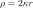
,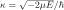
,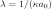
: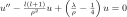
. - Asymptotics:
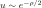
at infinity,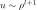
at the origin. Write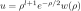
.  satisfies the confluent hypergeometric (Laguerre) equation; its power series grows like
satisfies the confluent hypergeometric (Laguerre) equation; its power series grows like 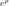
unless it terminates. Termination requires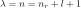
, an integer.- Then and
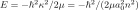
.
The "accidental"  -degeneracy comes from a hidden SO(4) symmetry (the conserved Runge–Lenz vector) (Pauli 1926).
-degeneracy comes from a hidden SO(4) symmetry (the conserved Runge–Lenz vector) (Pauli 1926).
Picture
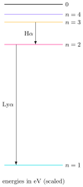
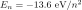
, with the Lyman- (
(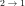
) and Balmer- (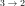
) transitions.Worked example
H ():
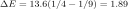
eV,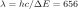
nm. Hydrogenic donor in silicon: replace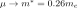
,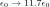
: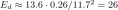
meV (P in Si: 45 meV with central-cell corrections),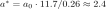
nm. This is why donors are ionised at room temperature (doping).Engineering applications
Spectroscopy and gas sensing, hydrogen masers (21 cm hyperfine line), shallow dopants and excitons in semiconductors (exciton binding in GaAs ≈ 4 meV), Rydberg-atom electrometers.
Pitfall
 counts radial nodes plus plus one; the 2s state has one radial node, 2p none.
counts radial nodes plus plus one; the 2s state has one radial node, 2p none.